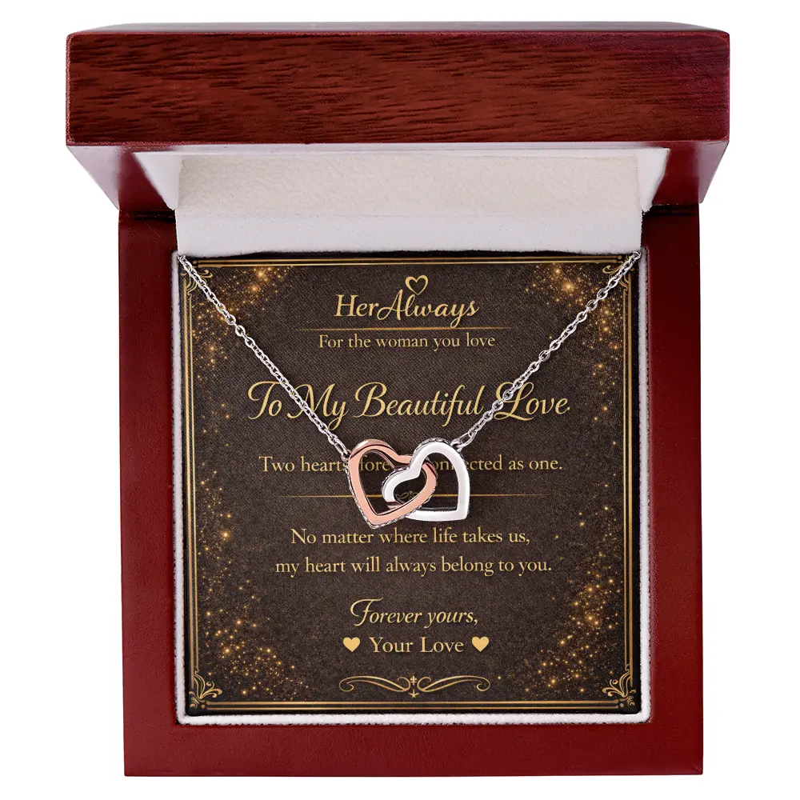
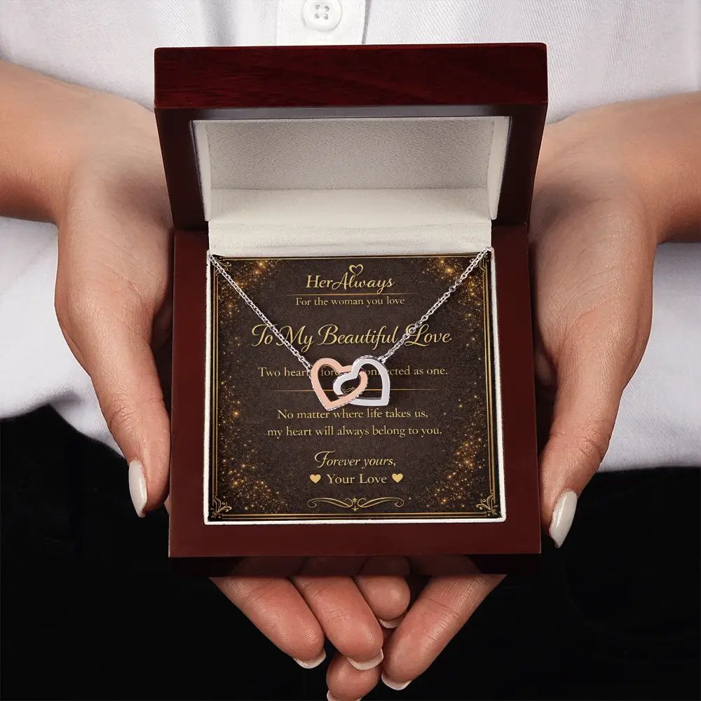

If you've been searching for interlocking hearts necklace meaning, the short answer is this: two hearts physically joined together represent an unbreakable bond between two people. Two intertwined hearts say that two lives are connected and that neither one stands alone, which is why the design is so widely understood and so often given as a romantic gift.
You'll also see this same design called a double heart necklace, an intertwined hearts necklace, or a linked hearts necklace. The names differ, but they describe the same idea: two hearts, connected, and both carry the same emotional weight.
Because a necklace is worn close to the chest, giving someone an interlocking hearts design is a quiet but clear way of saying: my heart is tied to yours.
Last updated: November 8, 2026 · Written by Elena Marsh, gift guide editor at HerAlways
Interlocking Hearts Necklace Meaning (Quick Guide)
Jump to: Symbolism | Rose Gold & Silver | Double Heart vs Interlocking | Three Hearts | When to Give It | Who to Give It To | Your Own Message | What to Look For | FAQ
- Core meaning → Two lives joined, unbreakable connection
- Also called → Double heart, intertwined hearts, linked hearts, two hearts connected
- Best for → Anniversaries, birthdays, "just because" gifts
- How serious it reads → Committed couple, not an engagement
- Personal touch → Write your own message on the card
- Compares to → Infinity (endless love) and Love Knot (deep commitment)
| Style | Meaning | Best For |
|---|---|---|
| Interlocking / Intertwined Hearts | Unbreakable bond, two lives joined | Romantic partners |
| Double Heart (side by side) | Two people, close but independent | Mother & daughter, close friends |
| Three Hearts | Three people bound together | Family, sisters, close friends |
| Single Heart | General love & affection | Any romantic occasion |
What Does an Interlocking Hearts Necklace Symbolize?

Best for: Anniversaries, birthdays, and meaningful "just because" gifts
At its core, the interlocking hearts necklace meaning comes down to three ideas:
- Unbreakable connection → Because the two hearts are physically linked, they can't be separated without breaking the shape itself, which is exactly the point
- Two people, one bond → Each heart stands for one person. They stay separate shapes, yet they are joined and move together
- Endless devotion → Much like an infinity symbol, the continuous loop of two joined hearts suggests a love that keeps circling back rather than coming to an end
This is different from wearing a single heart pendant, which represents love and affection in a general sense. Interlocking hearts go a step further by representing a specific relationship: two individuals, two hearts, one shared bond.
Designs that use two different finishes add a further layer. In our Interlocking Hearts Necklace, one heart is rose-gold tone and the other silver tone, a way of showing two different people who fit together. It is also one of the easiest necklace symbols to gift, because almost everyone understands what two joined hearts mean the moment they see them.
Rose Gold and Silver Hearts: What the Two Tones Mean
Our Interlocking Hearts Necklace joins a rose-gold tone heart with a silver-tone heart. The two tones are a visual way of showing that there are two different people here: separate, each with their own character, yet clearly made to hang together. You can read one heart as "you" and the other as "me," and the pairing as how well the two of you fit.
Double Heart, Intertwined or Linked Hearts — Is There a Difference?
Not really, but there's a small nuance worth knowing before you buy. In casual search and everyday conversation, double heart necklace meaning, two hearts intertwined meaning, and interlocking hearts necklace meaning are treated as the same thing, and in most cases they are. "Intertwined," "linked," "connected," and "interlocked" are just different ways to describe two hearts joined together.
Where it gets slightly more specific is in the design itself. When the two hearts are truly interlocking — physically hooked through one another — the meaning leans hardest toward "unbreakable" and "joined as one." When the two hearts sit side by side instead of linked, the meaning shifts slightly toward two people who remain close while still being their own person, which is why that version is also popular as a mother-daughter or best-friend gift.
For a romantic gift, the interlocking version is almost always the stronger choice, since it points directly at partnership rather than general closeness.
What Does a 3 Heart Necklace Mean?
A 3 heart necklace has no single fixed meaning, but it follows the same logic as the double heart: one heart for each person. Three hearts are usually read as three people bound together, such as a mother and her two daughters, three sisters, three close friends, or a small family. Some people also choose three hearts simply because they like the look.
If you're buying for a partner, two hearts is the clearer message, since it points at a couple rather than a group.
When to Give an Interlocking Hearts Necklace
- Anniversary — two joined hearts mark the two of you. See anniversary necklace for your wife.
- Birthday — a gift she'll wear every day. See our birthday necklace guide.
- Valentine's Day — the clearest "we." Order early, since shipping takes 6-15 business days. See is jewelry a good Valentine's Day gift.
- Long-distance — two hearts joined even when you're apart. See our long-distance gift guide.
- Christmas or just because — an unexpected "we" often means the most.
Is It Too Soon to Give a Double Heart Necklace?
It's a safe gift once you're clearly a couple, because two joined hearts say "we," which is a step beyond a single heart. If you've only just started dating, a single heart or a lighter card message may fit better. Either way it isn't an engagement or a promise.
Who Do You Give an Interlocking Hearts Necklace To?
The interlocking hearts necklace is most commonly given between romantic partners — it's a popular pick for anniversaries, Valentine's Day, and birthdays because it says something specific without needing a long message attached. If you're buying for a wife, our guide to the anniversary necklace for your wife explains which symbol suits which year.
That said, because the symbolism is really about "two people joined together," it also works well as a mother-daughter necklace or a gift between close friends who consider their bond unbreakable.
What does it mean when someone gives you an interlocking hearts necklace? From a partner, it means they see the two of you as joined and want you to know it. From a friend or family member, it means the bond matters to them and they expect it to last. It is not an engagement or a formal promise.
What to Write on an Interlocking Hearts Gift Card
Two hearts say "we." The card says why, and you write it yourself. The Interlocking Hearts Necklace card is titled "To My Beautiful Love," and the sample message reads "Two hearts forever connected as one." Click Create Your Gift, type your own message, or keep the sample if you prefer.
A few ideas to start from:
- Anniversary: "Two hearts, one story, and I'd choose ours again every time."
- Birthday: "Happy birthday to the other half of my heart."
- Valentine's Day: "Whatever happens, my heart is linked to yours."
- Long-distance: "Two hearts, one connection, no matter the miles."
- Just because: "Just because you're the person my heart keeps coming back to."
For more wording, see our necklace gift message for girlfriend ideas and what to engrave on a necklace for your girlfriend.
What to Look For in a Double Heart Necklace
- Truly linked or side by side: hearts that hook through each other carry the strongest "joined" message, as explained above.
- Tones: one rose-gold and one silver tone heart show two people. Matching tones read as two of a kind.
- Material: check what it is made of and that the stones are named honestly.
- Presentation: a box and a message card you can write yourself make it ready to give.
To be upfront about ours: the Interlocking Hearts Necklace is polished surgical steel with cubic zirconia crystals. It is a meaningful gift piece, not solid gold or diamond. To keep it looking good, remove it before swimming or showering, keep perfume off it, and store it dry.
How It Compares to Other Necklace Symbols
If you're still deciding between necklace symbols, here's how interlocking hearts stacks up against the most popular choices:
- The infinity necklace represents endless love in a more abstract way, without directly referencing "two" of anything, which makes it a softer, more universal choice.
- The single heart necklace represents love and affection broadly, without being tied to a specific relationship.
- The love knot necklace is the deeper commitment symbol, two lives tied together.
Interlocking hearts sits between them: more specific than a single heart, more concrete than infinity, and a little lighter than the love knot.
You can see every necklace symbol side by side in our necklace symbols and meanings guide, or browse our best necklace gifts for your girlfriend.
Interlocking Hearts Necklace Meaning FAQ
What does an interlocking hearts necklace symbolize?
An interlocking hearts necklace symbolizes an unbreakable bond between two people. Because the two hearts are physically linked, it represents two lives joined together and a connection that cannot easily be broken.
What does a double heart necklace mean?
A double heart necklace carries the same core meaning as an interlocking hearts necklace: unity, romantic love, and a deep emotional bond between two people. The two names are used interchangeably in most jewelry stores.
What do two hearts on a necklace mean?
Two hearts on a necklace generally represent two people joined by love. If the hearts are interlocking, the meaning leans toward unity and unbreakable connection. If they sit side by side, it often represents two individuals who remain close while staying their own person.
What does two hearts intertwined mean?
Two intertwined hearts mean two people whose lives are joined together. The hearts stay distinct but cannot be pulled apart, which is why the symbol is read as love, partnership, and a lasting connection.
What does a 3 heart necklace mean?
There is no single fixed meaning, but a three-heart necklace is usually read as three people bound together, such as a mother and two daughters, three sisters, three close friends, or a family of three. For a couple, a two-heart design is the clearer choice.
Is an interlocking hearts necklace only for couples?
No. While it's most popular as a romantic gift for a girlfriend or partner, an interlocking hearts necklace is also given between mothers and daughters or close friends to represent a bond that can't be broken.
What is the difference between interlocking hearts and a heart necklace?
A single heart necklace represents general love and affection, while an interlocking hearts necklace specifically represents two people or two lives joined together, making it a more relationship-specific symbol.
Does an interlocking hearts necklace mean you are engaged?
No. It is a symbol of a lasting bond, not an engagement or a formal promise. It can be given at any stage of a relationship, or between family and friends.
Can I write my own message on the card?
Yes. After clicking Create Your Gift you type your own message for the card, or you can keep the sample message.
Can you engrave names on an interlocking hearts necklace?
Our Interlocking Hearts Necklace isn't engraved. Its personal touch is the message card, where you write your own words. If you want a name on the necklace itself, see our Custom Name Necklace.
What does a rose gold and silver double heart necklace mean?
The two tones show two different people joined together. One heart can stand for you and the other for your partner, linked as a pair.
What does it mean when a guy gives you a double heart necklace?
It means he sees the two of you as a pair. A double heart says "we," so it is a step beyond a single heart, but it is not an engagement or a formal promise.
Two Hearts, Forever Connected

If you've decided that two joined hearts say exactly what you mean, the Interlocking Hearts Necklace is ready to be personalized with your own message.
Final Thoughts
The interlocking hearts necklace meaning comes down to one simple idea: two people, joined together, in a bond that isn't easily broken. Whether you call it a double heart, intertwined hearts, or interlocking hearts necklace, the sentiment is the same: two hearts, one connection.
Choosing a gift next? Read how to give a necklace to your girlfriend, or compare every symbol in our necklace symbols guide.